GravioLOG Public ersetzt den Papier-Auftragsschein: Auftrag auf dem Handy ausfüllen, beim Kunden unterschreiben lassen, Fotos anhängen und den fertigen Auftragsschein als PDF per WhatsApp oder E-Mail an die Dispo oder direkt an den Kunden schicken.
Das brauchen Sie
ein Android-Handy (oder Tablet) pro Fahrer, am besten mit WhatsApp,
einmalig Ihre Firmendaten und Ihr Logo,
für Aufträge vom PC: die GravioLOG Public Dispo im Browser (eigenes Handbuch).
Offline und ohne Konto in der Cloud
Erfassen, Unterschreiben, Fotos, PDF, Archiv und Arbeitszeit funktionieren auch ohne Netz. Alle Daten bleiben auf dem Handy. Internet braucht es nur zum Versenden, für Aufträge aus der Dispo, für Updates, einmalig für das Sprachmodell der Offline-Spracheingabe und für den Lizenzabgleich etwa alle 30 Tage.
Spracheingabe in jedem FeldNeben fast jedem Eingabefeld sitzt ein Mikrofon. Antippen, sprechen, fertig – standardmäßig offline mit Whisper direkt auf dem Handy, wahlweise mit der Google-Spracherkennung (siehe Kapitel 10).
2Installation, erster Start, Updates
Installieren
GravioLOG Public wird als APK-Datei installiert, nicht über den Play Store. Die Datei erhalten Sie über die Webseite von GravioLOG Public oder direkt vom Anbieter.
APK-Datei auf dem Handy öffnen.
Fragt Android nach, „Aus dieser Quelle zulassen“ einschalten.
Installieren antippen und GravioLOG Public öffnen.
Erster Start
Sprache wählen: Deutsch, Englisch, Italienisch, Niederländisch, Französisch oder Spanisch. Später unter Einstellungen → Sprache änderbar.
Fahrerkonto anlegen: Name und ein Passwort (mindestens 4 Zeichen). Das Konto liegt nur auf diesem Gerät. Das Passwort wird beim Bearbeiten des Kontos und beim Fahrerwechsel abgefragt, nicht bei jedem Start.
Die Testphase beginnt: 7 Tage mit allen Funktionen (Kapitel 16).
Updates
Die App sucht selbst nach neuen Versionen. Von Hand: Menü ⋮ → About → Nach Updates suchen. Die App lädt die neue Datei und öffnet die Installation. Aufträge, Archiv, Arbeitszeiten, Einstellungen und die Freischaltung bleiben erhalten.
Tablet, Day und Dark
Auf Tablets nutzt die App eine eigene, breitere Ansicht. Im Menü schalten Sie zwischen Day (hell) und Dark (dunkel) um.
3Der Bildschirm: Kopfleiste und Menü
Kopfleiste
Links – Fahrtenschreiber: Lenkzeit, Andere Arbeit, Bereitschaft, Pause/Ruhezeit. Die aktuelle Tätigkeit ist hervorgehoben, solange die Arbeitszeit läuft. Lange drücken öffnet die Arbeitszeiterfassung.
Rechts – Aktionen:
Zurücksetzen
leert das Formular für den nächsten Auftrag (mit Rückfrage)
Vorschau
zeigt den Auftragsschein als PDF, zoombar
An Dispo senden
schickt das PDF per WhatsApp oder über den eingestellten Senden-Knopf
Per E-Mail senden
öffnet die E-Mail-App mit dem PDF im Anhang
Menü ⋮
Day/Dark, Einstellungen, Arbeitszeit, Urlaub, Archiv, Freischalten, About
Der Auftrag ist aufgebaut wie ein Auftragsschein: Kopfdaten oben, darunter eine oder mehrere Touren. Jeder Abschnitt klappt per Antippen auf; ein grünes Häkchen zeigt, dass er vollständig ist. Pflichtfelder sind mit * markiert.
In allen Auswahlfeldern gilt: Eintrag antippen wählt ihn, erneut antippen entfernt die Auswahl. Neue Einträge tippen Sie einfach ein – die App merkt sie sich für das nächste Mal.
Kran-FahrzeugeEin Fahrzeug mit „Kran“ im Namen blendet automatisch die Ladekranarbeiten ein. Fehlt das Häkchen, fragt die App vor dem Senden: „Wurden Kranarbeiten durchgeführt?“
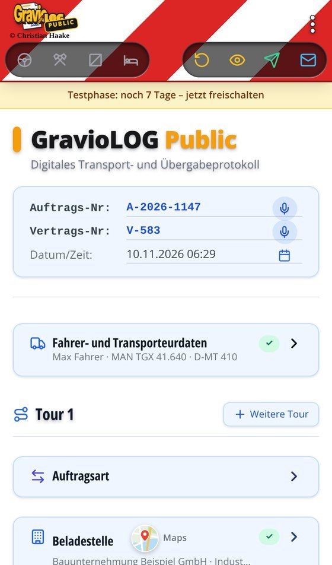
Tour
Jede Tour ist eine Fahrt von der Belade- zur Entladestelle und wird eine eigene Seite im PDF. Mit Weitere Tour legen Sie die nächste an.
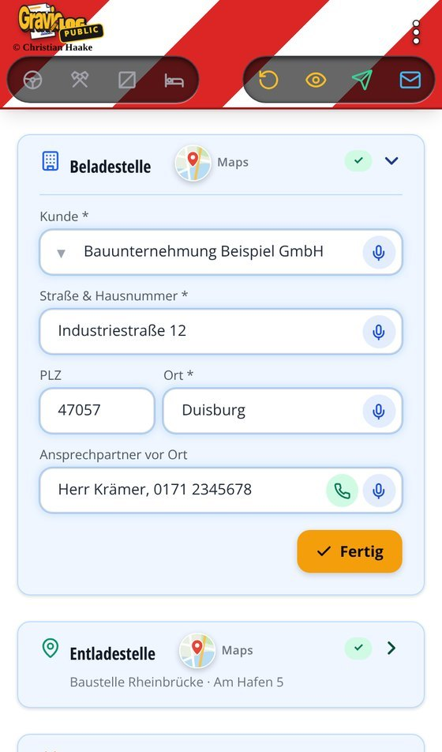
Auftragsart – z. B. Schwertransport, Kranarbeiten, Maschinentransport, Umsetzung, Baumaschinentransport, Begleitung, Montage, Ortsbesichtigung (eigene Arten in den Auswahllisten).
Beladestelle – Kunde, Straße, PLZ, Ort, Ansprechpartner vor Ort. Kunden aus der Kundenliste füllen die Adresse mit einem Tipp aus.
Entladestelle – Adresse, auf Wunsch mit eigenem Kunden.
Maps – das Karten-Symbol neben der Überschrift öffnet die Adresse in Google Maps, z. B. um gleich die Route zu planen.
Telefon-Symbol beim Ansprechpartner – ruft die eingetragene Nummer direkt an.
Das Feld „Ansprechpartner vor Ort“ ist eine Info für den Fahrer.
Transportdaten
Maschinentyp / Teil – z. B. Kettenbagger, Radlader, Arbeitsbühne; beim Typ „Teil“ zusätzlich das Teil (Baggermatten, Bauzäune, Spunddielen …)
+ Weiterer Maschinentyp – bis zu drei weitere Geräte auf derselben Tour, jedes mit eigenem Modell, Seriennummer und Gewicht
Weitere Abschnitte der Tour
Materialliste – Material und Mengen, auch Stapler
Fotos – mit der Kamera aufnehmen, z. B. Ladung, Schäden, Situation vor Ort; sie werden ans PDF angehängt
Zusätzliche Leistungen – Begleitfahrzeug, Überbreite, Überlänge, Überhöhe, Genehmigung und eigene Leistungen
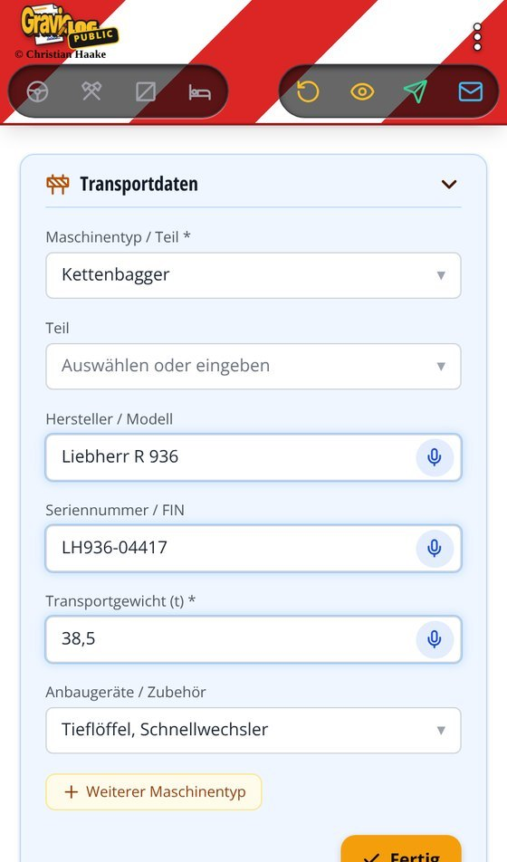
Hinweise und Abrechnung
Hinweise / Besondere Vereinbarungen – freier Text, steht im PDF.
Abrechnung – Nach Preisliste, Stundenabrechnung, Festpreisabrechnung oder Angebot; dazu Einsatzzeit von/bis, Wartezeit, An- und Abfahrt und Mindesteinsatzzeit. Die Rundung der Zeiten (minutengenau oder auf Viertelstunden) legen Sie in den Auswahllisten fest.
Hinweis in der AppDie Angaben dienen der Auftragsdokumentation. Zulässige Maße und Gewichte, Achslasten, Route, Genehmigungen und Ladungssicherung müssen vor Fahrtantritt fachlich geprüft werden.
5Unterschrift, Vorschau und Senden
Digitaler Empfangsschein
Bei „Bestätigung & Digitaler Empfangsschein“ ✍ Zum Unterschreiben antippen.
Der Kunde unterschreibt mit dem Finger – die Linie erscheint genau unter dem Finger.
Den Namen in Druckbuchstaben eintragen und Übernehmen antippen. Der Abschnitt zeigt „Erfasst & Bestätigt“.
Löschen setzt die Unterschrift zurück. Die Unterschrift ist optional, wenn niemand vor Ort ist.
Vorschau
Das Auge-Symbol in der Kopfleiste zeigt den fertigen Auftragsschein. Fehlt noch etwas, nennt die Vorschau die offenen Pflichtfelder.
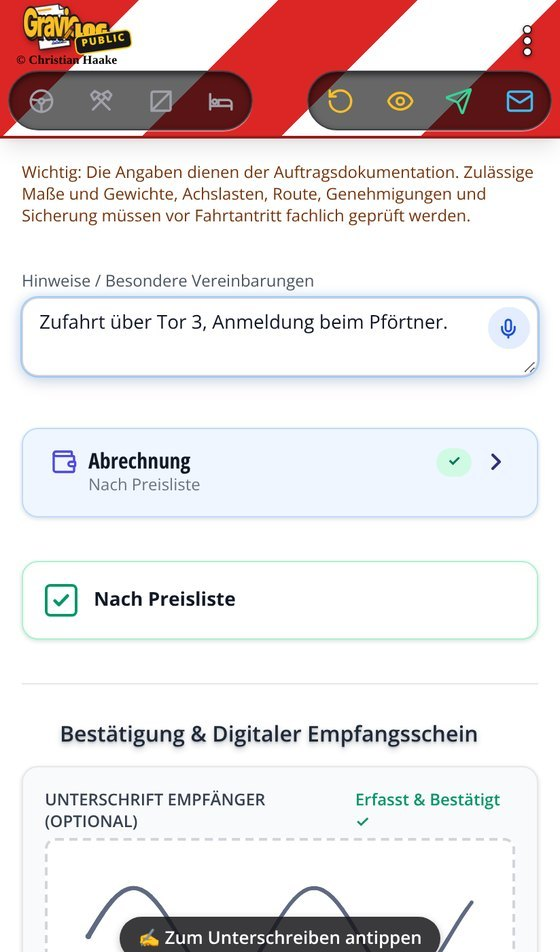
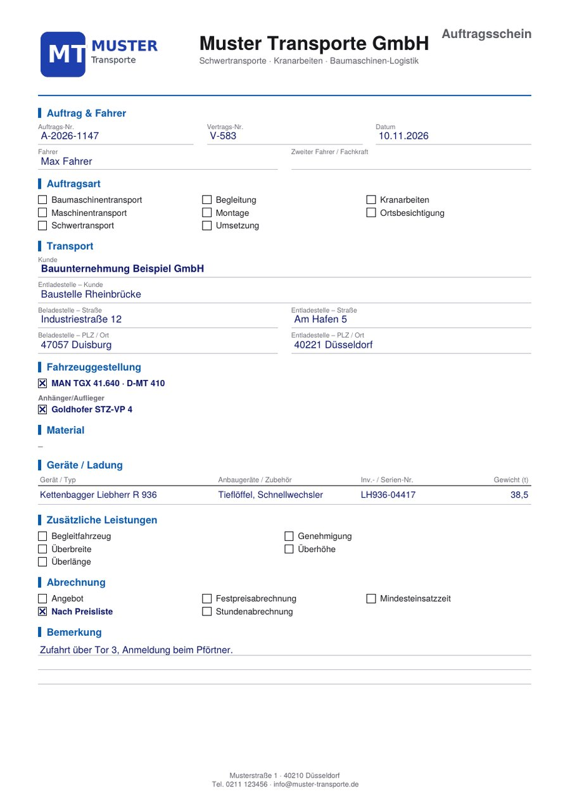
Beispiel: Auftragsschein aus dem PDF-Baukasten mit Logo, Firmenkopf und Fußzeile aus den Firmendaten.
Senden
An Dispo senden (grünes Symbol): Ist in den Firmendaten eine WhatsApp-Nummer der Dispo hinterlegt, öffnet sich direkt dieser Chat mit dem PDF. Ohne Nummer öffnet sich das Teilen-Menü – dann Dispo oder Kunde wählen.
Senden-Knopf einstellen: Unter Einstellungen → Versenden wählen Sie den Teilen-Dialog oder bestimmte Messenger- bzw. E-Mail-Apps.
Per E-Mail senden: Die E-Mail-App öffnet sich mit dem PDF; zuletzt benutzte Adressen schlägt die App vor.
Fotos an die WhatsApp-Gruppe: Die Fotos des Auftrags lassen sich zusätzlich gesammelt an eine Gruppe schicken.
Sobald das PDF gesendet oder gespeichert ist, liegt der Auftrag automatisch im Tour-Archiv. Mit Zurücksetzen beginnen Sie den nächsten Auftrag.
6Aufträge aus der Dispo
Die Dispo legt Aufträge am PC in der GravioLOG Public Dispo an und schickt sie als verschlüsselten Link per WhatsApp oder SMS.
Den Link in der Nachricht der Dispo antippen.
GravioLOG Public öffnet sich und fragt „Auftrag vom Disponenten übernehmen?“.
Übernehmen – Kopfdaten und alle Touren (Kunde, Adressen, Ansprechpartner, Maschine, Teil, Modell, Seriennummer, Gewicht, Anbaugeräte) stehen im Formular.
Steht noch ein unfertiger Auftrag im Formular, fragt die App vorher nach. Derselbe Link wird nur einmal übernommen. PDFs, die die Dispo mitschickt (z. B. Genehmigung, Lageplan), öffnen Sie direkt in WhatsApp.
7Tour-Archiv
Jeder Auftrag wird automatisch gespeichert, sobald das PDF gesendet oder gespeichert wurde. Öffnen über Menü ⋮ → Touren suchen.
Suchen nach Kunde, Ort oder Auftrags-Nr. – auch per Spracheingabe
Zeitraum mit „Datum von“ und „Datum bis“ eingrenzen, Filter löschen zeigt wieder alles
Einen Eintrag antippen zeigt die Transportdaten der Tour
In Auftrag übernehmen lädt einen alten Auftrag ins Formular, z. B. als Vorlage für eine wiederkehrende Fahrt
Das Archiv bleibt auch ohne gültige Lizenz lesbar.
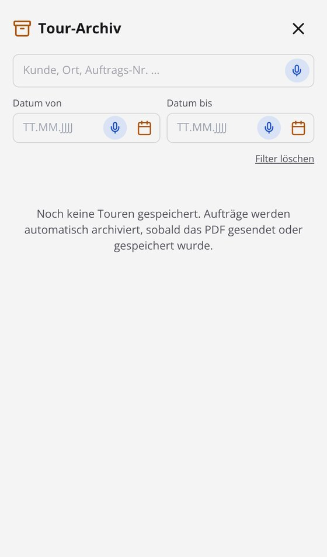
8Arbeitszeiterfassung
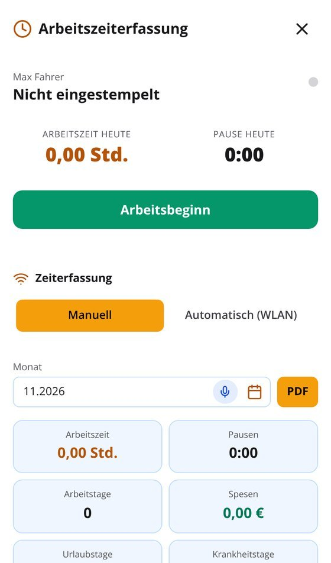
Menü ⋮ → Arbeitszeiterfassung. Oben steht der Status (z. B. „Nicht eingestempelt“), die Arbeitszeit und die Pause von heute.
Arbeitsbeginn, Pause und Feierabend per Knopf.
Zeiterfassung: Manuell oder Automatisch (WLAN) – im Firmen-WLAN einmal „Aktuelles WLAN hinzufügen“ antippen; danach erfasst die App die Zeit automatisch, sobald das Handy das Firmen-WLAN erkennt oder verlässt, und fragt bei Bedarf nach. Dafür braucht sie die Standort-Berechtigung, weil Android den WLAN-Namen nur so herausgibt; ausgewertet wird nur auf dem Handy.
Monatsübersicht: Arbeitszeit, Pausen, Arbeitstage, Spesen, Urlaubs- und Krankheitstage.
Spesen: mehr als 8 Stunden Abwesenheit vom Betrieb an einem Tag ergeben die Verpflegungspauschale von 14 €.
PDF – Arbeitszeitnachweis des Monats mit Firmenkopf, zum Senden oder Speichern; zusätzlich als CSV für die Lohnabrechnung.
9Urlaubsantrag
Menü ⋮ → Urlaubsantrag. Logo und Firmenname kommen aus den Firmendaten.
Mitarbeiter, Zeitraum „vom … bis“ und ggf. Resturlaub eintragen.
Die Arbeitstage rechnet die App selbst (Montag bis Freitag, auf Wunsch Samstag/Sonntag). Feiertage bitte selbst abziehen; der Wert lässt sich überschreiben.
Datum und Unterschrift des Arbeitnehmers.
Vorschau, dann Senden oder Speichern.
Auf Wunsch trägt die App die Tage nach dem Senden gleich als Urlaub in die Arbeitszeiterfassung ein. Die Unterschrift des Arbeitgebers bleibt frei – der Antrag gilt erst nach Unterschrift der Geschäftsleitung.
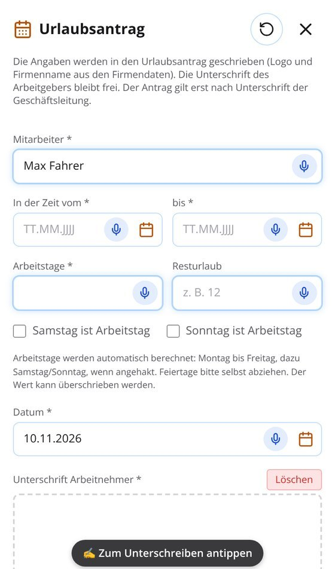
10Einstellungen im Überblick
Menü ⋮ → Einstellungen. Die Bereiche klappen auf; Unterseiten kehren beim Schließen in die Einstellungen zurück.
Dispo
Einstellungsdatei der Dispo laden (Kapitel 15)
Sprache
Sprache der App und – getrennt – Sprache der PDFs (Auftragsschein, Urlaubsantrag, Arbeitszeitnachweis)
Versenden
Senden-Knopf: Teilen-Dialog oder bestimmte Messenger/E-Mail-Apps
Spracheingabe
Whisper (offline, Sprachmodell einmalig ca. 180 MB laden) oder Google-Spracherkennung (schnell, braucht Internet)
Sicherung erstellen und wiederherstellen (Kapitel 17)
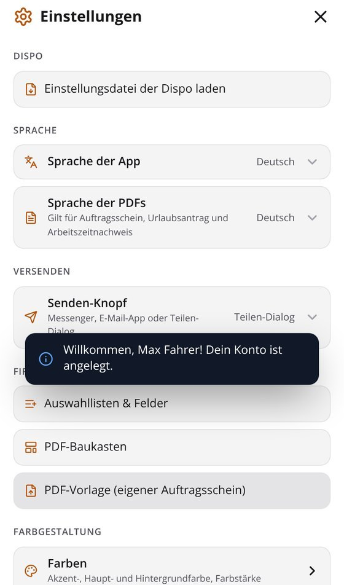
11Firmendaten & Logo
Einstellungen → Firma → Firmendaten & Logo (auch aus dem PDF-Baukasten erreichbar). Alles erscheint auf dem Auftragsschein, dem Urlaubsantrag und dem Arbeitszeitnachweis.
Logo – Bild wählen, Logogröße und -breite im PDF einstellen
Firmenname und Zusatzzeile (Leistungen, max. 2 Zeilen)
Schrift für Firmenname und Zusatzzeile: App-Schrift, Helvetica, Times, Times kursiv oder Courier – mit Vorschau der Kopfzeile
Fußzeile – Adresse und Kontakt, max. 3 Zeilen
WhatsApp-Nummer der Dispo – Ziel für „An Dispo senden“. Leer lassen: der Auftragsschein geht über das normale Teilen-Menü.
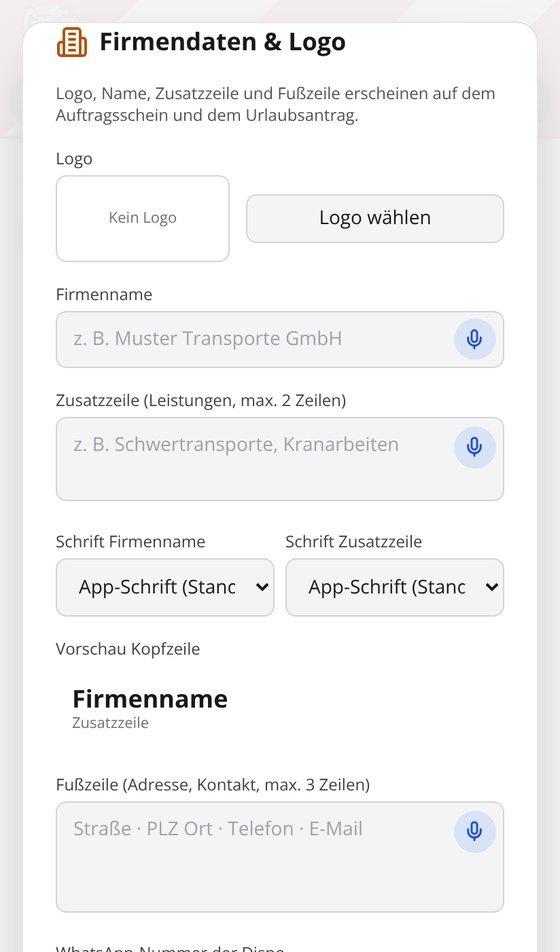
12Auswahllisten & Felder
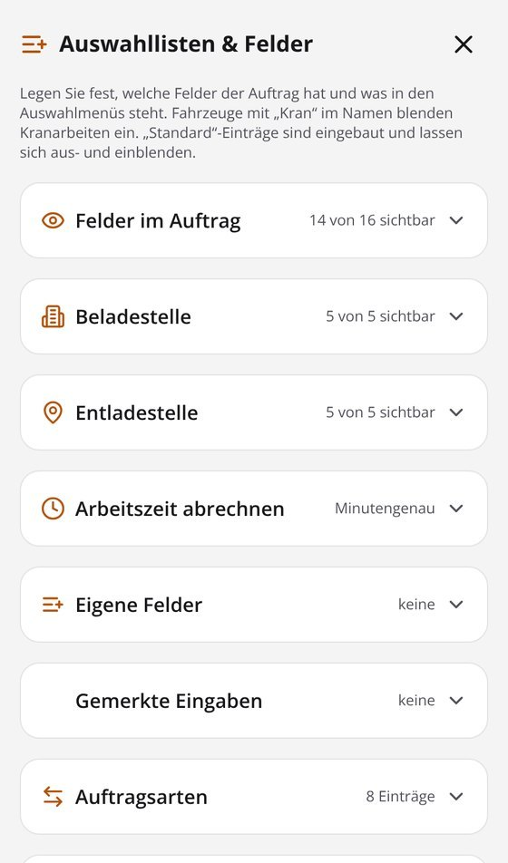
Hier legen Sie fest, welche Felder der Auftrag hat und was in den Auswahlmenüs steht. „Standard“-Einträge sind eingebaut und lassen sich aus- und einblenden.
Felder im Auftrag, Beladestelle, Entladestelle – jedes Feld ein- oder ausblenden, als Pflichtfeld markieren
Arbeitszeit abrechnen – minutengenau oder auf Viertelstunden gerundet
Eigene Felder – zusätzliche Punkte im Auftrag als Texteingabe, Auswahlmenü oder Ankreuzfeld, mit Platz im Auftrag (eigener Abschnitt, bei Belade- oder Entladestelle)
Gemerkte Eingaben – was die App sich gemerkt hat, ansehen und löschen
Kunden mit Adresse – erscheinen unter „Kunde“ bei Belade- und Entladestelle
Schneller einrichtenEinträge lassen sich auch direkt im Auswahlmenü eines Auftrags hinzufügen. Für mehrere Handys richtet die Dispo alles zentral ein und schickt es als Datei (Kapitel 15).
13PDF-Baukasten
Einstellungen → Firma → PDF-Baukasten. Hier bestimmen Sie, wie der Auftragsschein aussieht. Logo, Firmenname und Fußzeile kommen aus den Firmendaten.
Baukasten oder Eigener Vordruck – oben umschalten (Kapitel 14)
Titel des Dokuments, z. B. „Auftragsschein“ oder „Lieferschein“
Akzentfarbe für Überschriften und Linien
Abschnitte: Haken = erscheint im PDF. Überschrift antippen zum Umbenennen, ⚙ für Optionen (Kästchen, Spalten, Einträge), Pfeile ändern die Reihenfolge. Standard stellt alles zurück.
Abschnitte: Auftrag & Fahrer · Auftragsart · Transport (Kunde, Belade-/Entladestelle) · Fahrzeuggestellung · Materialliste · Geräte/Ladung mit Gewicht · Zusätzliche Leistungen · Abrechnung · Hinweise · eigener Text (z. B. Haftungshinweis) · Unterschrift.
Vorschau zeigt das Ergebnis sofort, Speichern übernimmt es.
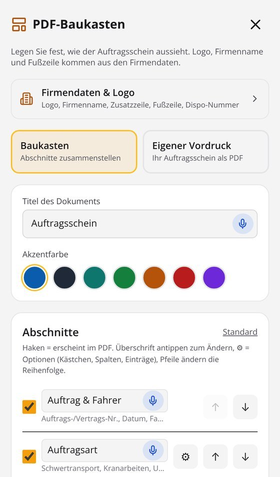
14Eigener Vordruck (PDF-Vorlage)
Sie haben schon einen Auftragsschein, den Ihre Kunden kennen? Dann füllt GravioLOG Public genau diesen Vordruck aus.
Die App erkennt, wo Kunde, Adressen, Datum, Maschine, Zeiten und Kästchen hingehören – aus Formularfeldern, Beschriftungen, Linien und Kästchen. Eingescannte Vordrucke und Fotos liest die Texterkennung.
Im Einrichtungs-Assistenten prüfen Sie die Markierungen einmal: falsche mit dem Finger (oder der Maus) verschieben, antippen zum Bearbeiten, + Feld für Fehlendes, zoomen für Feinarbeit. „Neu erkennen“ startet die Erkennung noch einmal.
App nach dem Vordruck einrichten: fehlende Felder des Vordrucks als eigene Felder ergänzen, die App ganz nach dem Vordruck ausrichten – oder nichts ändern.
Speichern. Ab jetzt schreibt die App jeden Auftrag in Ihren Vordruck; Ankreuzfelder werden angekreuzt, wiederholte Zeilen (2. Tour, weitere Geräte) automatisch verwendet.
Was am besten funktioniertAusfüllbare PDF-Formulare oder PDFs aus Word/Excel werden am genauesten erkannt – lassen Sie diese am besten am PC in der Dispo unter „App einrichten“ erkennen. Ein Foto geht auch: gerade von oben, ganzes Blatt, gutes Licht. Eingescannte Vordrucke liest das Handy mit seiner Texterkennung zuverlässig.
Zurück zum Baukasten: Im PDF-Baukasten oben Baukasten wählen oder den eigenen Vordruck löschen.
15Von der Dispo verwaltet
Die Dispo kann alle Handys der Firma zentral einrichten: Firmendaten und Logo, Auswahllisten und Felder, PDF-Baukasten bzw. eigener Vordruck, Farben, Senden-Knopf und PDF-Sprache. Sie schickt dafür eine kleine, verschlüsselte Einstellungsdatei (….gravio) per WhatsApp.
Die Datei in WhatsApp antippen und mit GravioLOG Public öffnen – oder in der App: Einstellungen → Dispo → Einstellungsdatei der Dispo laden.
Die App fragt „Einstellungen der Dispo übernehmen?“ – Übernehmen. Sie startet kurz neu.
In den Einstellungen steht jetzt „Von der Dispo verwaltet“ mit Firma und Datum. Die verwalteten Bereiche sind gesperrt (Schloss) und können am Gerät nicht mehr geändert werden.
Nicht überschrieben werden Fahrerkonto, Freischaltung, Aufträge, Archiv, Arbeitszeiten, Sprache der App, Spracheingabe und Day/Dark. Eine Freigabe-Datei der Dispo hebt die Sperre wieder auf; die Einstellungen bleiben dann erhalten. Nach Änderungen schickt die Dispo einfach eine neue Datei.
16Testphase, Lizenz und Verlängerung
Nach der Installation läuft GravioLOG Public 7 Tage mit allen Funktionen – ohne Anmeldung, ohne Zahlungsdaten. Danach ist eine Jahreslizenz pro Gerät nötig.
Freischalten
Lizenz für die gewünschte Anzahl Geräte bestellen und bezahlen (Überweisung oder PayPal, siehe Webseite).
Per E-Mail kommt ein Lizenzschlüssel (GLP-…) für alle bestellten Geräte.
Menü ⋮ → Freischalten, Schlüssel einfügen, Freischalten antippen (einmal Internet nötig). Jedes Handy belegt einen Platz.
Abgleich und Verlängerung
Etwa alle 30 Tage gleicht die App die Lizenz mit dem Lizenzserver ab. 30 Tage vor Ablauf erinnert sie oben „Lizenz läuft am … ab“. Nach Zahlung der Verlängerung übernimmt die App das neue Datum beim nächsten Abgleich von selbst – der Schlüssel bleibt gleich.
Ohne gültige Lizenz bleiben Archiv, Arbeitszeiten und Exporte lesbar; neue Aufträge senden und neue Arbeitszeiten erfassen ist gesperrt.
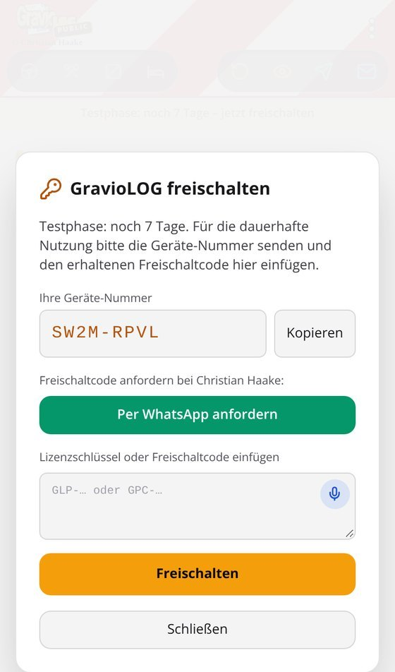
17Datensicherung und Gerätewechsel
Einstellungen → Datensicherung → Datensicherung erstellen speichert Archiv, Arbeitszeiten und Einstellungen in einer Datei. Auf dem neuen Handy: GravioLOG Public installieren, Sicherung wiederherstellen und die Datei wählen. Die Freischaltung gilt pro Gerät: Auf dem neuen Handy den Lizenzschlüssel einfach erneut einfügen.
Fahrer wechseln: Nutzen mehrere Fahrer ein Handy, wechseln Sie unter Einstellungen → Fahrerkonto (mit Passwort).
18Datenschutz und Sicherheit
Speicherort: Aufträge, Fotos, Unterschriften, Archiv, Arbeitszeiten und Einstellungen liegen nur auf dem Handy. Kein Konto in der Cloud, keine Werbung, kein Tracking.
Versand: PDFs gehen über Ihr eigenes WhatsApp bzw. Ihre E-Mail-App – erst, wenn Sie es antippen.
Aufträge und Einstellungsdateien der Dispo sind verschlüsselt (AES-256-GCM). Bei Auftrags-Links stehen die Daten nur im Teil hinter dem #-Zeichen und gehen deshalb nicht an den Server der Link-Seite.
Lizenzserver: bekommt nur Lizenzschlüssel und eine zufällige Geräte-Nummer – keine Namen, keine Auftragsdaten.
Spracheingabe: Whisper arbeitet vollständig offline. Nur wenn Sie die Google-Spracherkennung wählen, geht die Aufnahme an Google.
Fahrerkonto: Das Passwort wird nicht gespeichert, nur ein gesicherter Prüfwert.
Die vollständige Datenschutzerklärung steht auf der Webseite von GravioLOG Public.
19Hilfe und Kontakt
Christian Haake · E-Mail: sevens7.ch@gmail.com · Webseite: sevens7ch-tech.github.io/GravioLog-Public
Bitte bei Fragen zur Lizenz die Geräte-Nummer aus Menü ⋮ → Freischalten mitschicken.